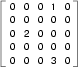

Table Of Contents
Previous topic
Next topic
Runestone Links
- Readers Online Now
- Navigation Help
- Report a Problem
- About Runestone
- Instructors Page

All of the compound data types we have studied in detail so far — strings, lists, and tuples — are sequential collections. This means that the items in the collection are ordered from left to right and they use integers as indices to access the values they contain.
Dictionaries are a different kind of collection. They are Python’s built-in mapping type. A map is an unordered, associative collection. The association, or mapping, is from a key, which can be any immutable type, to a value, which can be any Python data object.
As an example, we will create a dictionary to translate English words into Spanish. For this dictionary, the keys are strings.
One way to create a dictionary is to start with the empty dictionary and add key-value pairs. The empty dictionary is denoted {}
(chp12_dict1)
The first assignment creates a dictionary named eng2sp. The other assignments add new key-value pairs to the dictionary. The left hand side gives the dictionary and the key being associated. The right hand side gives the value being associated with that key. We can print the current value of the dictionary in the usual way. The key-value pairs of the dictionary are separated by commas. Each pair contains a key and a value separated by a colon.
The order of the pairs may not be what you expected. Python uses complex algorithms, designed for very fast access, to determine where the key-value pairs are stored in a dictionary. For our purposes we can think of this ordering as unpredictable.
Another way to create a dictionary is to provide a list of key-value pairs using the same syntax as the previous output.
(chp12_dict2)
It doesn’t matter what order we write the pairs. The values in a dictionary are accessed with keys, not with indices, so there is no need to care about ordering.
Here is how we use a key to look up the corresponding value.
(chp12_dict3)
The key 'two' yields the value 'dos'.
Scratch Editor
Check your understanding
11.1.1: A dictionary is an unordered collection of key-value pairs.
11.1.2: What is printed by the following statements?
mydict = {"cat":12, "dog":6, "elephant":23}
print(mydict["dog"])
The del statement removes a key-value pair from a dictionary. For example, the following dictionary contains the names of various fruits and the number of each fruit in stock. If someone buys all of the pears, we can remove the entry from the dictionary.
(ch12_dict4)
Dictionaries are also mutable. As we’ve seen before with lists, this means that the dictionary can be modified by referencing an association on the left hand side of the assignment statement. In the previous example, instead of deleting the entry for pears, we could have set the inventory to 0.
(ch12_dict4a)
Similarily, a new shipment of 200 bananas arriving could be handled like this.
(ch12_dict5)
Notice that there are now 512 bananas—the dictionary has been modified. Note also that the len function also works on dictionaries. It returns the number of key-value pairs:
Scratch Editor
Check your understanding
11.2.1: What is printed by the following statements?
mydict = {"cat":12, "dog":6, "elephant":23}
mydict["mouse"] = mydict["cat"] + mydict["dog"]
print(mydict["mouse"])
Dictionaries have a number of useful built-in methods. The following table provides a summary and more details can be found in the Python Documentation.
| Method | Parameters | Description |
|---|---|---|
| keys | none | Returns a view of the keys in the dictionary |
| values | none | Returns a view of the values in the dictionary |
| items | none | Returns a view of the key-value pairs in the dictionary |
| get | key | Returns the value associated with key; None otherwise |
| get | key,alt | Returns the value associated with key; alt otherwise |
The keys method returns what Python 3 calls a view of its underlying keys. We can iterate over the view or turn the view into a list by using the list conversion function.
(chp12_dict6)
It is so common to iterate over the keys in a dictionary that you can omit the keys method call in the for loop — iterating over a dictionary implicitly iterates over its keys.
(chp12_dict7)
As we saw earlier with strings and lists, dictionary methods use dot notation, which specifies the name of the method to the right of the dot and the name of the object on which to apply the method immediately to the left of the dot. The empty parentheses in the case of keys indicate that this method takes no parameters.
The values and items methods are similar to keys. They return view objects which can be turned into lists or iterated over directly. Note that the items are shown as tuples containing the key and the associated value.
(chp12_dict8)
Note that tuples are often useful for getting both the key and the value at the same time while you are looping. The two loops do the same thing.
The in and not in operators can test if a key is in the dictionary:
(chp12_dict9)
This operator can be very useful since looking up a non-existent key in a dictionary causes a runtime error.
The get method allows us to access the value associated with a key, similar to the [ ] operator. The important difference is that get will not cause a runtime error if the key is not present. It will instead return None. There exists a variation of get that allows an alternative return value in the case where the key is not present.
(chp12_dict10)
Check your understanding
11.3.1: What is printed by the following statements?
mydict = {"cat":12, "dog":6, "elephant":23, "bear":20}
keylist = list(mydict.keys())
keylist.sort()
print(keylist[3])
11.3.2: What is printed by the following statements?
mydict = {"cat":12, "dog":6, "elephant":23, "bear":20}
answer = mydict.get("cat")//mydict.get("dog")
print(answer)
11.3.3: What is printed by the following statements?
mydict = {"cat":12, "dog":6, "elephant":23, "bear":20}
print("dog" in mydict)
11.3.4: What is printed by the following statements?
mydict = {"cat":12, "dog":6, "elephant":23, "bear":20}
print(23 in mydict)
11.3.5: What is printed by the following statements?
total = 0
mydict = {"cat":12, "dog":6, "elephant":23, "bear":20}
for akey in mydict:
if len(akey) > 3:
total = total + mydict[akey]
print(total)
Because dictionaries are mutable, you need to be aware of aliasing (as we saw with lists). Whenever two variables refer to the same dictionary object, changes to one affect the other. For example, opposites is a dictionary that contains pairs of opposites.
(ch12_dict11)
As you can see from the is operator, alias and opposites refer to the same object.
If you want to modify a dictionary and keep a copy of the original, use the dictionary copy method. Since acopy is a copy of the dictionary, changes to it will not effect the original.
acopy = opposites.copy()
acopy['right'] = 'left' # does not change opposites
Check your understanding
11.4.1: What is printed by the following statements?
mydict = {"cat":12, "dog":6, "elephant":23, "bear":20}
yourdict = mydict
yourdict["elephant"] = 999
print(mydict["elephant"])
We previously used a list of lists to represent a matrix. That is a good choice for a matrix with mostly nonzero values, but consider a sparse matrix like this one:
The list representation contains a lot of zeroes:
matrix = [[0, 0, 0, 1, 0],
[0, 0, 0, 0, 0],
[0, 2, 0, 0, 0],
[0, 0, 0, 0, 0],
[0, 0, 0, 3, 0]]
An alternative is to use a dictionary. For the keys, we can use tuples that contain the row and column numbers. Here is the dictionary representation of the same matrix.
matrix = {(0, 3): 1, (2, 1): 2, (4, 3): 3}
We only need three key-value pairs, one for each nonzero element of the matrix. Each key is a tuple, and each value is an integer.
To access an element of the matrix, we could use the [] operator:
matrix[(0, 3)]
Notice that the syntax for the dictionary representation is not the same as the syntax for the nested list representation. Instead of two integer indices, we use one index, which is a tuple of integers.
There is one problem. If we specify an element that is zero, we get an error, because there is no entry in the dictionary with that key. The alternative version of the get method solves this problem. The first argument will be the key. The second argument is the value get should return if the key is not in the dictionary (which would be 0 since it is sparse).
(chp12_sparse)
Lab
Lab
Write a program that reads in a string on the command line and returns a table of the letters of the alphabet in alphabetical order which occur in the string together with the number of times each letter occurs. Case should be ignored. A sample run of the program would look this this:
$ python letter_counts.py "ThiS is String with Upper and lower case Letters."
a 2
c 1
d 1
e 5
g 1
h 2
i 4
l 2
n 2
o 1
p 2
r 4
s 5
t 5
u 1
w 2
$
Give the Python interpreter’s response to each of the following from a continuous interpreter session:
>>> d = {'apples': 15, 'bananas': 35, 'grapes': 12}
>>> d['banana']
>>> d['oranges'] = 20
>>> len(d)
>>> 'grapes' in d
>>> d['pears']
>>> d.get('pears', 0)
>>> fruits = d.keys()
>>> fruits.sort()
>>> print(fruits)
>>> del d['apples']
>>> 'apples' in d
Be sure you understand why you get each result. Then apply what you have learned to fill in the body of the function below:
def add_fruit(inventory, fruit, quantity=0):
pass
# make these tests work...
new_inventory = {}
add_fruit(new_inventory, 'strawberries', 10)
test('strawberries' in new_inventory, True)
test(new_inventory['strawberries'], 10)
add_fruit(new_inventory, 'strawberries', 25)
test(new_inventory['strawberries'] , 35)
Write a program called alice_words.py that creates a text file named alice_words.txt containing an alphabetical listing of all the words, and the number of times each occurs, in the text version of Alice’s Adventures in Wonderland. (You can obtain a free plain text version of the book, along with many others, from http://www.gutenberg.org.) The first 10 lines of your output file should look something like this
Word
Count
a
631
a-piece
1
abide
1
able
1
about
94
above
3
absence
1
absurd
2
How many times does the word, alice, occur in the book? If you are writing this in the activecode window simply print out the results rather than write them to a file.
What is the longest word in Alice in Wonderland? How many characters does it have?
Here’s a table of English to Pirate translations
English
Pirate
sir
matey
hotel
fleabag inn
student
swabbie
boy
matey
madam
proud beauty
professor
foul blaggart
restaurant
galley
your
yer
excuse
arr
students
swabbies
are
be
lawyer
foul blaggart
the
th’
restroom
head
my
me
hello
avast
is
be
man
matey
Write a program that asks the user for a sentence in English and then translates that sentence to Pirate.